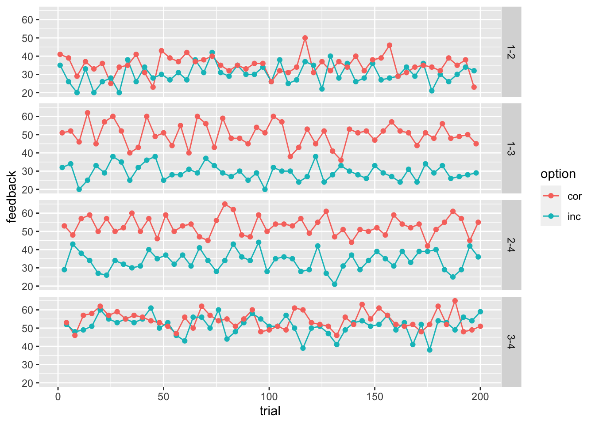
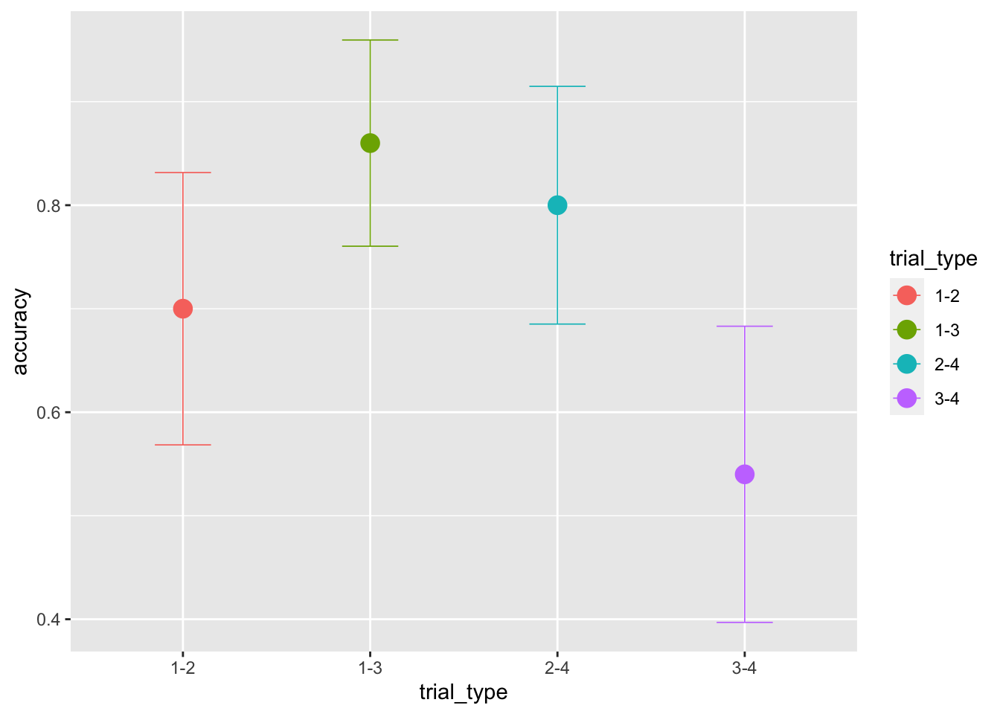
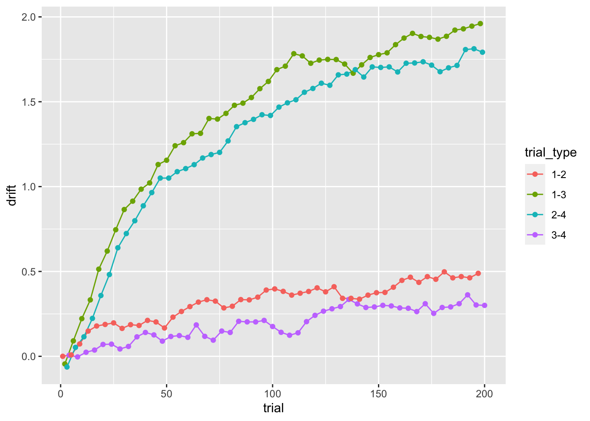
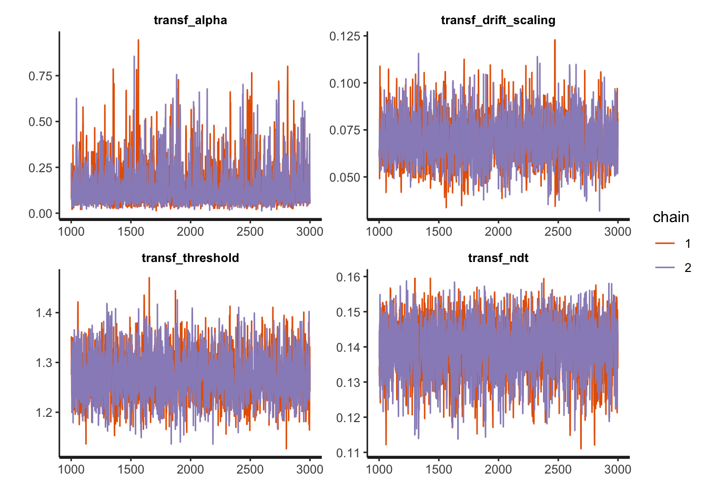
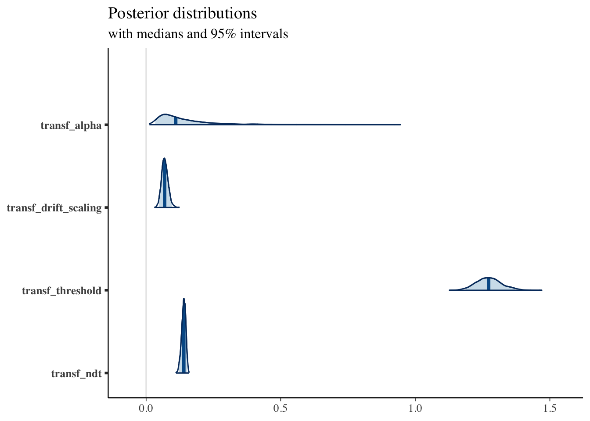
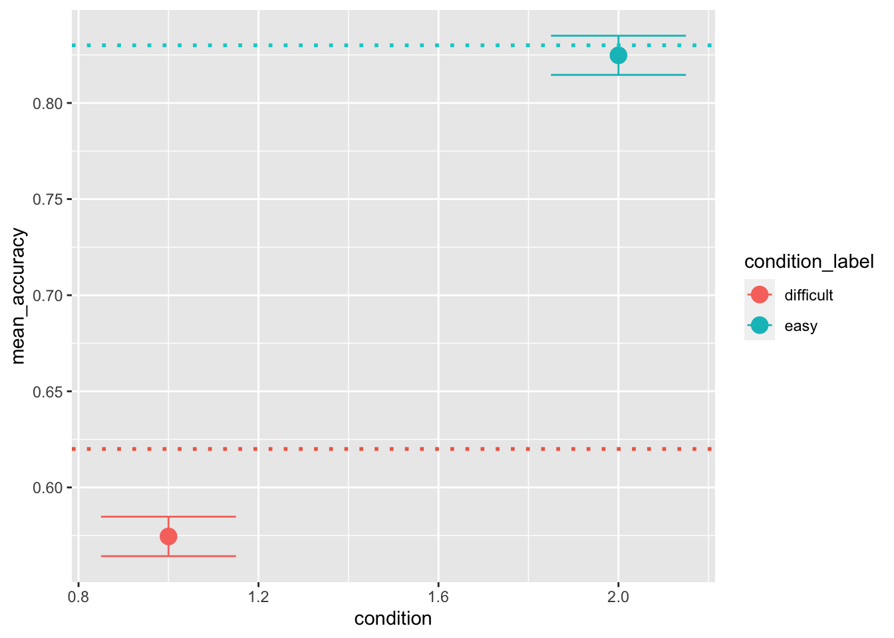
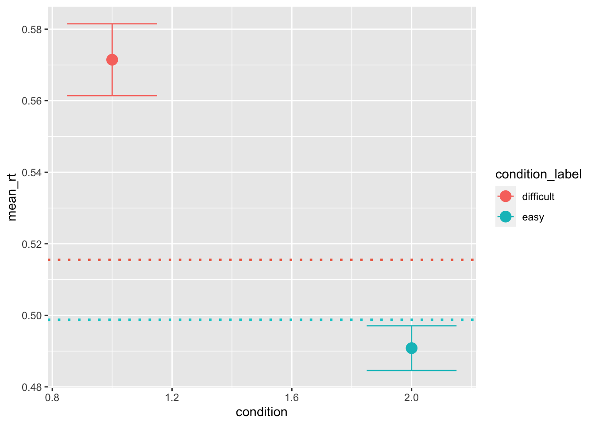
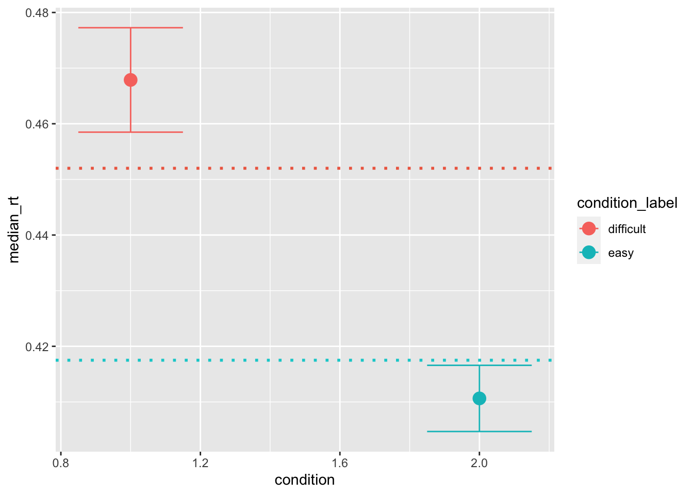

The reinforcement learning diffusion model
rm(list = ls())
library(tidyverse)
library(dfoptim)
library(rtdists)
library(rstan)
library(bayesplot)First, we need to create some stimuli for the reinforcement learning task. I am going to recreate the experiment we used in our RLDM paper:
generate_RL_stimuli <- function (n_trials, trial_types, mean_options, sd_options) {
# n_trials_block : Number of trials per learning session.
# n_blocks : Number of learning session per participant.
# n_participants : Number of participants.
# trial_types : List containing possible pairs of options.
# E.g., in the original experiment: c('1-2', '1-3', '2-4', '3-4').
# It is important that they are separated by a '-',
# and that they are numbered from 1 to n_options (4 in the example).
# Also, the "incorrect" option of the couple should go first in each pair.
# mean_options : Mean reward for each option.
# The length should correspond to n_options.
# sd_options : SD reward for each option.
# The length should correspond to n_options.
generate_trial_type_sequence <- function (n_trials, trial_types) {
n_trial_types = length(trial_types)
sequence = rep(trial_types, n_trials/n_trial_types)
sample(sequence)
count = 3
while (count < length(sequence)) {
if (sequence[count]==sequence[count-1] & sequence[count-1]==sequence[count-2]) {
sample(sequence)
count = 2
}
count = count + 1
}
return(sequence)
}
task_design = data.frame(
trial = seq(1, n_trials),
trial_type = generate_trial_type_sequence(n_trials, trial_types)
)
task_design <- separate(task_design,
col=trial_type,
into=c('inc_option', 'cor_option'),
sep='-',
remove=FALSE,
convert=TRUE)
options = unique(c(unique(task_design$inc_option), unique(task_design$cor_option)))
n_options = length(options)
print("The task will be created with the following options:")
print(data.frame(options=options, mean=mean_options, sd=sd_options))
task_design$f_inc = round(rnorm(
mean = mean_options[task_design$inc_option],
sd = sd_options[task_design$inc_option],
n=dim(task_design)[1]))
task_design$f_cor = round(rnorm(
mean = mean_options[task_design$cor_option],
sd = sd_options[task_design$cor_option],
n=dim(task_design)[1]))
return(task_design)
}Generate a bunch of trials and visualize the task design:
stimuli <- generate_RL_stimuli(
n_trials=200,
trial_types=c('1-2', '1-3', '2-4', '3-4'),
mean_options=c(30, 34, 50, 54),
sd_options=c(5, 5, 5, 5))## [1] "The task will be created with the following options:"
## options mean sd
## 1 1 30 5
## 2 2 34 5
## 3 3 50 5
## 4 4 54 5head(stimuli)## trial trial_type inc_option cor_option f_inc f_cor
## 1 1 1-2 1 2 35 41
## 2 2 1-3 1 3 32 51
## 3 3 2-4 2 4 29 53
## 4 4 3-4 3 4 52 53
## 5 5 1-2 1 2 26 39
## 6 6 1-3 1 3 34 52stimuli_for_plotting <- pivot_longer(stimuli, cols=c(f_inc, f_cor), names_to = "option", names_prefix = "f_", values_to="feedback")
ggplot(data = stimuli_for_plotting, aes(x = trial, y = feedback, color=option))+
geom_line(size = .5) +
geom_point() +
facet_grid(rows = vars(trial_type))
We can now write down Equations 1, 4, and 5 from our RLDM paper to simulate the process described by the RLDM:
# simulate data from simple DM
random_dm <- function(drift, threshold, ndt, rel_sp=.5, noise_constant=1, dt=0.001, max_rt=10) {
if (length(drift) != length(threshold) | length(threshold)!=length(ndt)) {
stop("drift, threshold, and ndt should have the same length")
}
n_trials <- length(drift)
acc <- rep(NA, n_trials)
rt <- rep(NA, n_trials)
max_tsteps <- max_rt/dt
# initialize the diffusion process
tstep <- 0
x <- rel_sp*threshold # vector of accumulated evidence at t=tstep
ongoing <- rep(TRUE, n_trials) # have the accumulators reached the bound?
# start accumulating
while (sum(ongoing) > 0 & tstep < max_tsteps) {
x[ongoing] <- x[ongoing] + rnorm(mean=drift[ongoing]*dt,
sd=noise_constant*sqrt(dt),
n=sum(ongoing))
tstep <- tstep + 1
# ended trials
ended_correct <- (x >= threshold)
ended_incorrect <- (x <= 0)
# store results and filter out ended trials
if(sum(ended_correct) > 0) {
acc[ended_correct & ongoing] <- 1
rt[ended_correct & ongoing] <- dt*tstep + ndt[ended_correct & ongoing]
ongoing[ended_correct] <- FALSE
}
if(sum(ended_incorrect) > 0) {
acc[ended_incorrect & ongoing] <- 0
rt[ended_incorrect & ongoing] <- dt*tstep + ndt[ended_incorrect & ongoing]
ongoing[ended_incorrect] <- FALSE
}
}
return (data.frame(trial=seq(1, n_trials), accuracy=acc, rt=rt))
}
# simulate data from simple RLDM
random_rldm <- function(stimuli, alpha, drift_scaling, threshold, ndt, rel_sp=.5, noise_constant=1, dt=0.001, max_rt=10, initial_value_learning=20) {
n_trials = dim(stimuli)[1]
options = unique(c(unique(stimuli$inc_option), unique(stimuli$cor_option)))
n_options = length(options)
# Rescorla Wagner learning rule
stimuli$Q_cor = NA
stimuli$Q_inc = NA
Q = rep(initial_value_learning, n_options)
for (n in seq(1, n_trials, 1)) {
index_cor = stimuli[n, "cor_option"]
index_inc = stimuli[n, "inc_option"]
# current expectations
stimuli[n, "Q_cor"] = Q[index_cor]
stimuli[n, "Q_inc"] = Q[index_inc]
# update expectations
Q[index_cor] = Q[index_cor] + alpha*(stimuli[n, "f_cor"] - Q[index_cor])
Q[index_inc] = Q[index_inc] + alpha*(stimuli[n, "f_inc"] - Q[index_inc])
}
# Diffusion Model as decision rule
stimuli$drift = drift_scaling*(stimuli$Q_cor - stimuli$Q_inc)
stimuli$threshold = threshold
stimuli$ndt = ndt
performance = random_dm(stimuli$drift, stimuli$threshold, stimuli$ndt)
return(cbind(stimuli, performance[,c("accuracy", "rt")]))
}And use it to simulate data using the previously generated stimuli:
sim_data <- random_rldm(stimuli, alpha = .03, drift_scaling = .1, threshold = 1.2, ndt=.15)
head(sim_data)## trial trial_type inc_option cor_option f_inc f_cor Q_cor Q_inc drift
## 1 1 1-2 1 2 35 41 20.0000 20.0000 0.0000000
## 2 2 1-3 1 3 32 51 20.0000 20.4500 -0.0450000
## 3 3 2-4 2 4 29 53 20.0000 20.6300 -0.0630000
## 4 4 3-4 3 4 52 53 20.9900 20.9300 0.0060000
## 5 5 1-2 1 2 26 39 20.8811 20.7965 0.0084600
## 6 6 1-3 1 3 34 52 21.8621 20.9526 0.0909495
## threshold ndt accuracy rt
## 1 1.2 0.15 0 0.458
## 2 1.2 0.15 1 0.934
## 3 1.2 0.15 0 1.005
## 4 1.2 0.15 0 0.262
## 5 1.2 0.15 1 0.548
## 6 1.2 0.15 1 1.132First, we can have a look at the average performance across trial-types. Note that, since the threshold was not modulated, the same performance is predicted across magnitudes:
sim_data$trial_bin <- cut(sim_data$trial,
breaks = seq(min(sim_data$trial), max(sim_data$trial), length.out=7),
include.lowest = TRUE)
ggplot(data = sim_data, aes(x = trial_type, y = rt, color=trial_type))+
stat_summary(fun = "mean", geom="point", size=4) +
stat_summary(fun.data = mean_cl_normal, geom = "errorbar", size=.3, width=.3)ggplot(data = sim_data, aes(x = trial_type, y = accuracy, color=trial_type))+
stat_summary(fun = "mean", geom="point", size=4) +
stat_summary(fun.data = mean_cl_normal, geom = "errorbar", size=.3, width=.3)
While we kept both the threshold and ndt fixed, the drift-rates evolves with learning:
ggplot(data = sim_data, aes(x = trial, y = drift, color=trial_type))+
geom_line(size = .5) +
geom_point()
Therefore, we expect the accuracy and RTs to also improve with learning:
ggplot(data = sim_data, aes(x = trial_bin, y = rt))+
geom_violin(draw_quantiles = c(0.1, 0.5, 0.9))
ggplot(data = sim_data, aes(x = trial_bin, y = accuracy))+
stat_summary(fun = "mean", geom="bar", position = 'dodge') +
stat_summary(fun.data = mean_cl_normal, geom = "errorbar", size=.2, width=.9, position = 'dodge')Parameter recovery with MLE
To get the likelihood of the RLDM, we can build on the likelihood of the DM (that we saw in the previous lecture):
log_likelihood_rldm <- function(par, data, initial_value_learning=20, ll_threshold=1e-10) {
# par order: alpha, drift_scaling, threshold, ndt
n_trials = dim(data)[1]
options = unique(c(unique(data$inc_option), unique(data$cor_option)))
n_options = length(options)
# Rescorla Wagner learning rule
data$Q_cor = NA
data$Q_inc = NA
Q = rep(initial_value_learning, n_options)
for (n in seq(1, n_trials, 1)) {
index_cor = data[n, "cor_option"]
index_inc = data[n, "inc_option"]
# current expectations
data[n, "Q_cor"] = Q[index_cor]
data[n, "Q_inc"] = Q[index_inc]
# update expectations
Q[index_cor] = Q[index_cor] + par[1]*(data[n, "f_cor"] - Q[index_cor])
Q[index_inc] = Q[index_inc] + par[1]*(data[n, "f_inc"] - Q[index_inc])
}
# Diffusion Model as decision rule
drift <- par[2]*(data$Q_cor - data$Q_inc)
density <- ddiffusion(rt=data$rt, response=data$response, a=par[3], v=drift, t0=par[4])
density[density <= ll_threshold] = ll_threshold # put a threhsold on very low likelihoods for computability
return(sum(log(density)))
}We can thus use the Nelder-Mead algorithm in the dfoptim package to estimate the parameters:
# preparing the data for the likelihood func
sim_data$response = "lower"
sim_data[sim_data$accuracy == 1, "response"] = "upper"
starting_values = c(.5, .1, 2, .2) # set some starting values
print(log_likelihood_rldm(starting_values, data=sim_data)) # check that starting values are plausible## [1] -613.9113fit1 <- nmkb(par = starting_values,
fn = function (x) log_likelihood_rldm(x, data=sim_data),
lower = c(0, -10, 0, 0),
upper = c(1, 10, 10, 5),
control = list(maximize = TRUE))
print(fit1$par) # print estimated parameters## [1] 0.06044017 0.07735565 1.27009240 0.14149854Parameter Recovery with stan
We can also recover the generating parameters of the simulated data with stan, to assess th model’s identifialbility.
First, we need to prepare our data for stan:
sim_data$accuracy_recoded = sim_data$accuracy
sim_data[sim_data$accuracy==0, "accuracy_recoded"] = -1
sim_data_for_stan = list(
N = dim(sim_data)[1],
K = 4, # n options
accuracy = sim_data$accuracy_recoded,
rt = sim_data$rt,
starting_point = 0.5,
initial_value=20,
f_cor=sim_data$f_cor,
f_inc=sim_data$f_inc,
trial=sim_data$trial,
cor_option=sim_data$cor_option,
inc_option=sim_data$inc_option
)And then we can fit the model:
fit1 <- stan(
file = "stan_models/RLDM.stan", # Stan program
data = sim_data_for_stan, # named list of data
chains = 2, # number of Markov chains
warmup = 1000, # number of warmup iterations per chain
iter = 3000, # total number of iterations per chain
cores = 2 # number of cores (could use one per chain)
)## Running /Library/Frameworks/R.framework/Resources/bin/R CMD SHLIB foo.c
## clang -mmacosx-version-min=10.13 -I"/Library/Frameworks/R.framework/Resources/include" -DNDEBUG -I"/Library/Frameworks/R.framework/Versions/4.0/Resources/library/Rcpp/include/" -I"/Library/Frameworks/R.framework/Versions/4.0/Resources/library/RcppEigen/include/" -I"/Library/Frameworks/R.framework/Versions/4.0/Resources/library/RcppEigen/include/unsupported" -I"/Library/Frameworks/R.framework/Versions/4.0/Resources/library/BH/include" -I"/Library/Frameworks/R.framework/Versions/4.0/Resources/library/StanHeaders/include/src/" -I"/Library/Frameworks/R.framework/Versions/4.0/Resources/library/StanHeaders/include/" -I"/Library/Frameworks/R.framework/Versions/4.0/Resources/library/RcppParallel/include/" -I"/Library/Frameworks/R.framework/Versions/4.0/Resources/library/rstan/include" -DEIGEN_NO_DEBUG -DBOOST_DISABLE_ASSERTS -DBOOST_PENDING_INTEGER_LOG2_HPP -DSTAN_THREADS -DBOOST_NO_AUTO_PTR -include '/Library/Frameworks/R.framework/Versions/4.0/Resources/library/StanHeaders/include/stan/math/prim/mat/fun/Eigen.hpp' -D_REENTRANT -DRCPP_PARALLEL_USE_TBB=1 -I/usr/local/include -fPIC -Wall -g -O2 -c foo.c -o foo.o
## In file included from <built-in>:1:
## In file included from /Library/Frameworks/R.framework/Versions/4.0/Resources/library/StanHeaders/include/stan/math/prim/mat/fun/Eigen.hpp:13:
## In file included from /Library/Frameworks/R.framework/Versions/4.0/Resources/library/RcppEigen/include/Eigen/Dense:1:
## In file included from /Library/Frameworks/R.framework/Versions/4.0/Resources/library/RcppEigen/include/Eigen/Core:88:
## /Library/Frameworks/R.framework/Versions/4.0/Resources/library/RcppEigen/include/Eigen/src/Core/util/Macros.h:613:1: error: unknown type name 'namespace'
## namespace Eigen {
## ^
## /Library/Frameworks/R.framework/Versions/4.0/Resources/library/RcppEigen/include/Eigen/src/Core/util/Macros.h:613:16: error: expected ';' after top level declarator
## namespace Eigen {
## ^
## ;
## In file included from <built-in>:1:
## In file included from /Library/Frameworks/R.framework/Versions/4.0/Resources/library/StanHeaders/include/stan/math/prim/mat/fun/Eigen.hpp:13:
## In file included from /Library/Frameworks/R.framework/Versions/4.0/Resources/library/RcppEigen/include/Eigen/Dense:1:
## /Library/Frameworks/R.framework/Versions/4.0/Resources/library/RcppEigen/include/Eigen/Core:96:10: fatal error: 'complex' file not found
## #include <complex>
## ^~~~~~~~~
## 3 errors generated.
## make: *** [foo.o] Error 1Compare the generating parameters with the recovered ones and check for convergence looking at the Rhat measures:
print(fit1, pars = c("transf_alpha", "transf_drift_scaling", "transf_threshold", "transf_ndt"))## Inference for Stan model: RLDM.
## 2 chains, each with iter=3000; warmup=1000; thin=1;
## post-warmup draws per chain=2000, total post-warmup draws=4000.
##
## mean se_mean sd 2.5% 25% 50% 75% 97.5% n_eff Rhat
## transf_alpha 0.15 0 0.11 0.03 0.07 0.11 0.18 0.47 1738 1
## transf_drift_scaling 0.07 0 0.01 0.05 0.06 0.07 0.08 0.10 2170 1
## transf_threshold 1.27 0 0.05 1.19 1.24 1.27 1.30 1.37 1907 1
## transf_ndt 0.14 0 0.01 0.12 0.13 0.14 0.15 0.15 1992 1
##
## Samples were drawn using NUTS(diag_e) at Fri Sep 10 13:23:19 2021.
## For each parameter, n_eff is a crude measure of effective sample size,
## and Rhat is the potential scale reduction factor on split chains (at
## convergence, Rhat=1).And (visually) assess the model’s convergence as well as some more sampling diagnostics:
traceplot(fit1, pars = c("transf_alpha", "transf_drift_scaling", "transf_threshold", "transf_ndt"),
inc_warmup = FALSE, nrow = 2)
sampler_params <- get_sampler_params(fit1, inc_warmup = TRUE)
summary(do.call(rbind, sampler_params), digits = 2)## accept_stat__ stepsize__ treedepth__ n_leapfrog__
## Min. :0.00 Min. :6.1e-05 Min. :0.0 Min. : 1.0
## 1st Qu.:0.88 1st Qu.:4.0e-01 1st Qu.:2.0 1st Qu.: 7.0
## Median :0.96 Median :4.2e-01 Median :3.0 Median : 7.0
## Mean :0.88 Mean :4.6e-01 Mean :2.8 Mean : 8.4
## 3rd Qu.:0.99 3rd Qu.:4.2e-01 3rd Qu.:3.0 3rd Qu.: 7.0
## Max. :1.00 Max. :1.4e+01 Max. :8.0 Max. :452.0
## divergent__ energy__
## Min. :0.0000 Min. : 84
## 1st Qu.:0.0000 1st Qu.: 86
## Median :0.0000 Median : 87
## Mean :0.0073 Mean : 453
## 3rd Qu.:0.0000 3rd Qu.: 89
## Max. :1.0000 Max. :44536More plotting:
posterior <- as.matrix(fit1)
plot_title <- ggtitle("Posterior distributions",
"with medians and 95% intervals")
mcmc_areas(posterior,
pars = c("transf_alpha", "transf_drift_scaling", "transf_threshold", "transf_ndt"),
prob = 0.95) + plot_title
Posterior predictives
Until now, we have “stopped” at the model fitting part and haven’t looked at posterior predictives yet. Unfortunately, stan doesn’t have a generating function that we can add to the generating quantities for posterior predictives. Therefore we sort of have to do it ourselves.
This gives us the opportunity of understanding how posterior predictives are calculated and what should we use.
First of all, we can extract the trial-by-trial parameter estimates as data frames:
# Extract single-trial parameters
drift_t = as.data.frame(fit1, pars="drift_t")
threshold_t = as.data.frame(fit1, pars="threshold_t")
ndt_t = as.data.frame(fit1, pars="ndt_t")
n_samples = dim(drift_t)[1]
n_samples## [1] 4000Then, we can use them to calculate predictions of RTs and accuracy and find ways to group them e.g. by condition:
# add conditions based on choice pairs
sim_data[(sim_data$inc_option == 1)&(sim_data$cor_option == 2),"condition_label"] <- "difficult"
sim_data[(sim_data$inc_option == 1)&(sim_data$cor_option == 3),"condition_label"] <- "easy"
sim_data[(sim_data$inc_option == 2)&(sim_data$cor_option == 4),"condition_label"] <- "easy"
sim_data[(sim_data$inc_option == 3)&(sim_data$cor_option == 4),"condition_label"] <- "difficult"
sim_data[(sim_data$inc_option == 1)&(sim_data$cor_option == 2),"condition"] <- 1
sim_data[(sim_data$inc_option == 1)&(sim_data$cor_option == 3),"condition"] <- 2
sim_data[(sim_data$inc_option == 2)&(sim_data$cor_option == 4),"condition"] <- 2
sim_data[(sim_data$inc_option == 3)&(sim_data$cor_option == 4),"condition"] <- 1
# calculate PP
pred_stats <- data.frame()
for (n in seq(1, 100, 1)) { # number of posterior predictives
r = sample(seq(1, n_samples), 1) # sample from the joint posterior distr
for (c in unique(sim_data$condition)) {
pred <- random_dm(drift=as.numeric(slice(drift_t, r))[sim_data$condition == c], # get the r sample, across all trials
threshold=as.numeric(slice(threshold_t, r))[sim_data$condition == c],
ndt=as.numeric(slice(ndt_t, r))[sim_data$condition == c])
pred_stats <- rbind(pred_stats,
data.frame(mean_accuracy=mean(pred$accuracy),
mean_rt=mean(pred$rt),
median_rt=median(pred$rt),
condition=c))
}
}
pred_stats[pred_stats$condition == 1, "condition_label"] = "difficult"
pred_stats[pred_stats$condition == 2, "condition_label"] = "easy"Now that we have distributions of summary statistics, we can compare them with the ones that we calculate on the data. This plotting style is actually not ideal. Instead of plotting the 95 CI we rather plot HDIs, however, the principle is the same:
ggplot(data = pred_stats, aes(x = condition, y = mean_accuracy, color=condition_label))+
stat_summary(fun = "mean", geom="point", size=4) +
stat_summary(fun.data = mean_cl_normal, geom = "errorbar", size=.5, width=.3) +
geom_hline(yintercept = mean(sim_data[sim_data$condition == 1, "accuracy"]), color='coral2', linetype='dotted', size=1) +
geom_hline(yintercept = mean(sim_data[sim_data$condition == 2, "accuracy"]), color='darkturquoise', linetype='dotted', size=1)
ggplot(data = pred_stats, aes(x = condition, y = mean_rt, color=condition_label))+
stat_summary(fun = "mean", geom="point", size=4) +
stat_summary(fun.data = mean_cl_normal, geom = "errorbar", size=.5, width=.3) +
geom_hline(yintercept = mean(sim_data[sim_data$condition == 1, "rt"]), color='coral2', linetype='dotted', size=1) +
geom_hline(yintercept = mean(sim_data[sim_data$condition == 2, "rt"]), color='darkturquoise', linetype='dotted', size=1)
ggplot(data = pred_stats, aes(x = condition, y = median_rt, color=condition_label))+
stat_summary(fun = "mean", geom="point", size=4) +
stat_summary(fun.data = mean_cl_normal, geom = "errorbar", size=.5, width=.3) +
geom_hline(yintercept = median(sim_data[sim_data$condition == 1, "rt"]), color='coral2', linetype='dotted', size=1) +
geom_hline(yintercept = median(sim_data[sim_data$condition == 2, "rt"]), color='darkturquoise', linetype='dotted', size=1)